地政学
サラエボは国家機関と国際機関が集まる首都で、連邦、共和国、民族代表制の複雑な制度を日常の街路に映します。バルカン、欧州、イスラム圏の記憶が交差し、外交と和解の現場にもなります。今も政治の緊張を抱えます。
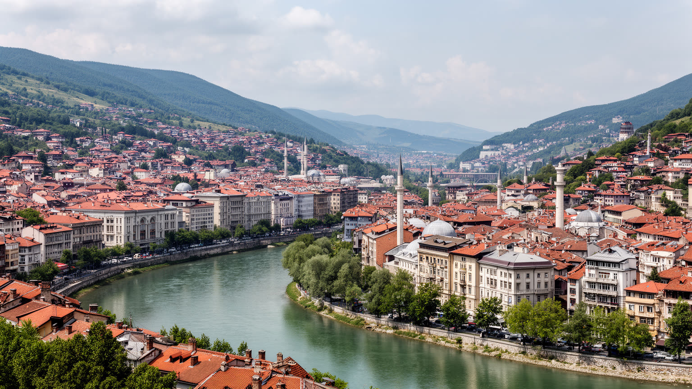
🇧🇦 ボスニア・ヘルツェゴビナ / ヨーロッパ / World City Atlas
ディナル・アルプスの谷に、オスマン都市、ハプスブルクの大通り、諸宗教の近さ、戦争の記憶、映画祭と山岳観光が重なるボスニア・ヘルツェゴビナの首都です。
都市の骨格
サラエボはミリャツカ川沿いの細い谷に市街地を伸ばします。東のバシュチャルシヤ、西の官庁街、丘の住宅地、山岳リゾートが近く、地形の狭さが文化の密度と包囲戦の記憶を同時に残します。
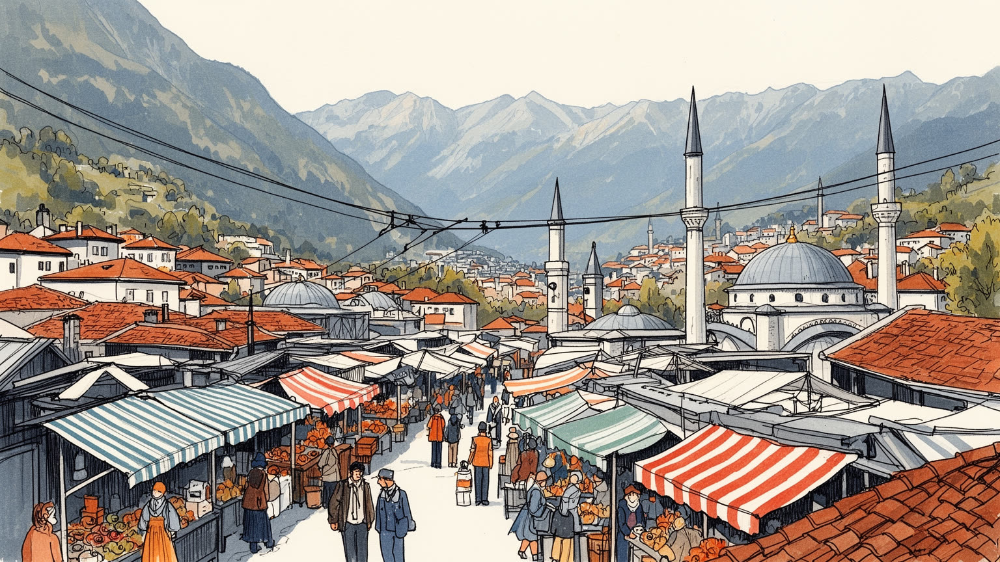
サラエボは国家機関と国際機関が集まる首都で、連邦、共和国、民族代表制の複雑な制度を日常の街路に映します。バルカン、欧州、イスラム圏の記憶が交差し、外交と和解の現場にもなります。今も政治の緊張を抱えます。
行政、大学、観光、商業、金融、映画祭が雇用を作り、ホテル、飲食、交通、建設、公共部門が生活を支えます。若者の国外流出、失業、低賃金は重く、都市経済は文化的な発信力と日々の不安定さを併せ持っています。
モスク、正教会、カトリック教会、シナゴーグが近く、街は多宗教の記憶を持ちます。音楽、映画、コーヒー、職人街、戦争の追悼は観光資源である前に、家族と隣人が生き延びてきた歴史です。儀礼は今も街に残ります。
旧市街、橋、博物館、山岳を巡れる一方、住民には冬の空気汚染、暖房費、公共交通、住宅改修、若者の雇用が課題です。観光は収入を生みますが、記憶を消費に変えすぎない慎重さも求められます。暮らしは谷で続きます。
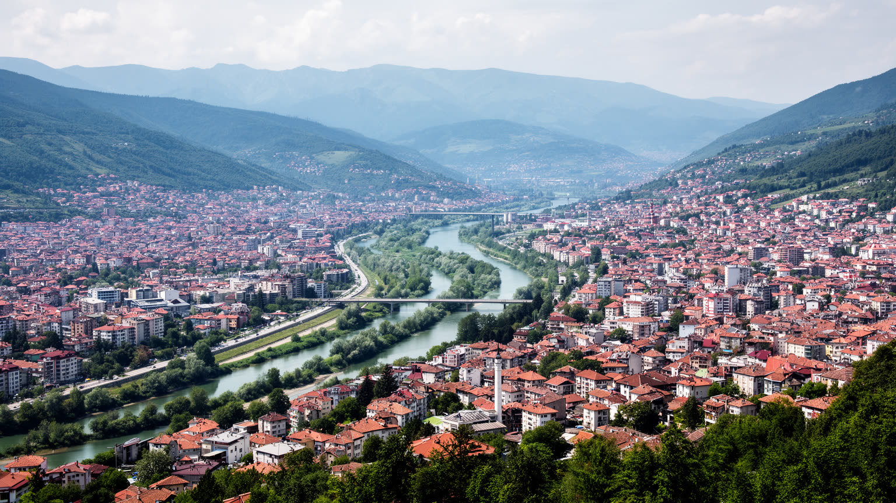
サラエボを理解する入口は、ミリャツカ川に沿う細長い谷です。市街地は東西へ伸び、両側の丘に住宅地と墓地が上がり、その背後にイグマン、ビェラシュニツァ、ヤホリナなどの山が迫ります。地形は美しい眺望を与えるだけでなく、都市の移動、住宅、気候、戦争の記憶を決めてきました。谷底の道路とトラムは限られた平地を共有し、冬には冷たい空気と煙が滞留しやすく、暖房と交通の排出が生活環境を悪化させます。丘の上からは旧市街、ハプスブルク期の街路、社会主義期の集合住宅、戦後の新しい建物が一望できますが、その眺望は包囲戦で砲撃の位置にもなりました。サラエボの地形はロマンチックな背景ではなく、便利さと危険を同時に作る条件です。谷が狭いからこそ人と宗教施設と市場は近く、同時に道路渋滞、空気汚染、雪への弱さも強まります。山は観光資源であり、逃げ場であり、記憶の縁でもあります。川沿いの中心部では歩いて用事を済ませやすい一方、丘の住宅地では坂道、除雪、バスの本数が生活の差になります。都市計画は平地をどう使うかだけでなく、斜面の安全、緑地、排水、暖房方式まで含めて考える必要があります。狭い谷に首都機能が集まるため、土地利用の選択が住民の健康と移動時間に直接響きます。だから地形は景観ではなく、都市政策そのものです。毎日の呼吸にも関わります。
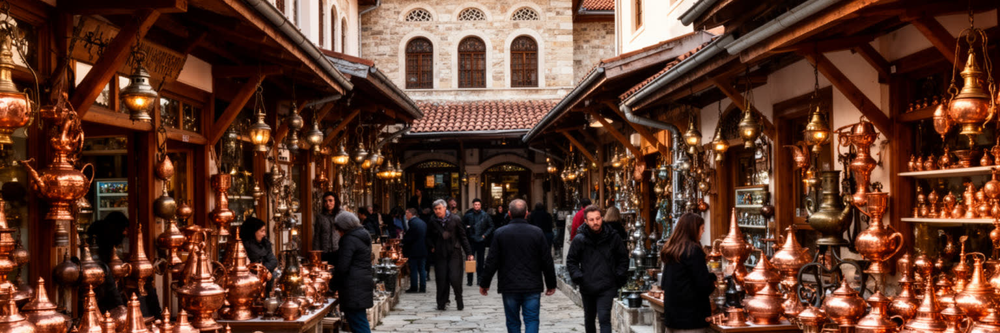
東側のバシュチャルシヤは、サラエボがオスマン帝国の都市として成長した記憶を濃く残します。細い石畳、木造の商店、銅細工の店、噴水、中庭、ハン、モスクが近い距離に並び、商売、祈り、休息が分かれすぎない街の使い方を示します。ここで飲まれる濃いコーヒー、焼き菓子、チェヴァピ、職人の金属音は観光の演出である前に、家族経営と手仕事の継承に関わります。旧市街は多くの訪問者を引き寄せますが、土産物化が進みすぎると、住民の市場や職人の技術は景観だけに縮みます。オスマンの層を読むには、建物の古さだけでなく、店主が誰へ売り、どの家族が店を継ぎ、礼拝時間が通りのリズムをどう変えるかを見る必要があります。観光客は短い散策で異国情緒を感じますが、地元の人にとっては待ち合わせ、昼食、客人を迎える場所でもあります。旧市街の魅力は保存された古さではなく、商売と祈りが今も通りを動かしている点にあります。店の間口は小さくても、奥には親族、仕入れ先、修理職人、常連客の関係が続いています。観光客向けの価格と住民向けの習慣が同じ通りで交差するため、保存政策は外観だけでなく営業の持続性も守らなければなりません。バシュチャルシヤは博物館ではなく、働く市場です。朝の搬入や閉店後の片付けにも、旧市街の本当の時間が表れます。雨の日の客足も街を変えます。
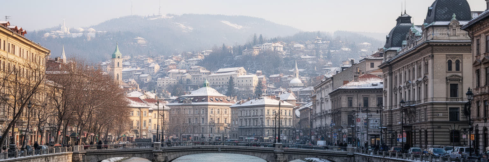
旧市街から西へ歩くと、街の表情は急に変わります。オーストリア・ハンガリー統治期に整えられた大通り、石造の官庁、劇場、学校、郵便局、銀行、集合住宅が現れ、サラエボは帝国の辺境都市でありながら近代都市として再編されました。この層は鉄道、行政、建築、教育を通じて都市の制度を変え、東西の境界を一本の歩行路に圧縮しました。ラテン橋周辺は第一次世界大戦の導火線として語られますが、事件だけで街を読むと、日常の行政と生活の厚みを見落とします。ハプスブルク期の建物は、欧州的な都市景観を与えると同時に、支配と近代化が重なった歴史を残します。現在のカフェ、大学、官庁、商店はその建物を使い続け、都市の記憶を生活の器に変えています。サラエボの独自性は、オスマンの市場と中欧風の大通りが観光地として隣接するだけでなく、住民が毎日の用事としてその境界を越えることにあります。歩く距離の短さが、帝国史を抽象ではなく身体感覚にします。建築の装飾は華やかですが、その背後には統治、徴税、教育、衛生、軍事の制度がありました。近代化は利便性をもたらしながら、誰が都市を設計し、誰の言語や記憶が中心に置かれるかという問題も生みました。その二面性が大通りに残っています。橋や広場の名も、時代ごとの権力と記憶の置き換えを静かに伝えています。
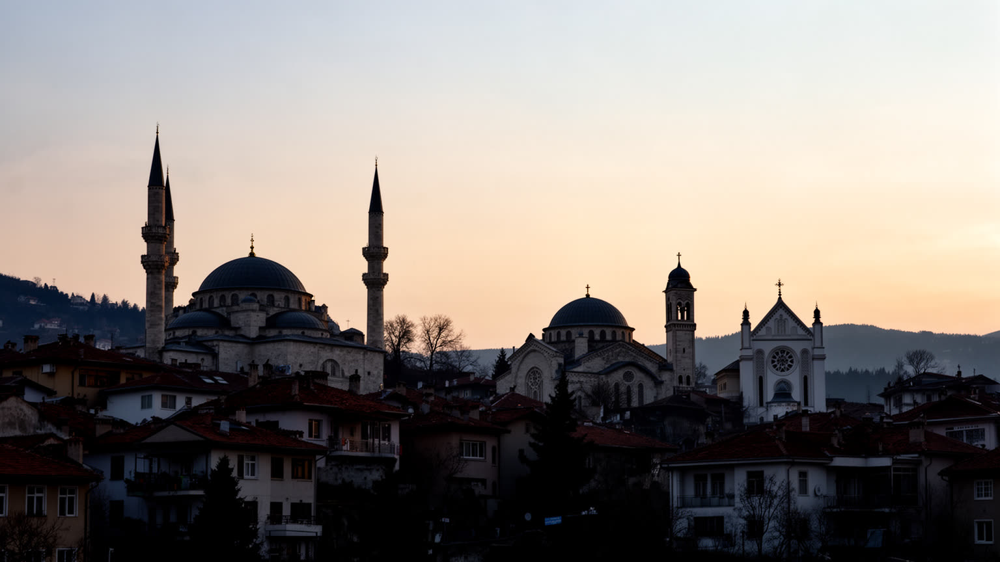
サラエボはしばしば多宗教都市として語られます。モスク、正教会、カトリック大聖堂、シナゴーグが比較的近い距離にあり、ボスニア・ヘルツェゴビナの複雑な民族と宗教の歴史を都市空間で示します。ただし、この近さを単純な調和の象徴としてだけ読むのは危うい見方です。礼拝、婚礼、葬送、祝祭、断食月、クリスマス、家族の墓参りは、日常の時間割と政治的な記憶の両方に関わります。戦争は隣人関係を壊し、信仰の場所を民族境界の印としても使いました。それでも、同じ市場で買い物をし、同じトラムに乗り、同じ病院や学校を使う生活は、分断だけでは説明できない都市の現実を作ります。宗教施設は観光の名所であると同時に、共同体の相談、慈善、記憶の保管場所でもあります。サラエボの宗教を読むとは、美しい建物を並べることではなく、近さの中にある信頼、傷、沈黙、再接続の努力を見ることです。祈りの音が重なる街では、共存は完成した状態ではなく、毎日調整される関係です。学校、職場、結婚、祭日の休み、食の習慣は、宗教と民族の違いを具体的な生活問題にします。違いを語らずに済ませる沈黙が平穏を守ることもあれば、傷を長引かせることもあります。近隣生活の繊細さこそ、この都市の重要な現実です。だから宗教施設の近さは、写真の構図以上に、隣人として生きる技術を問います。
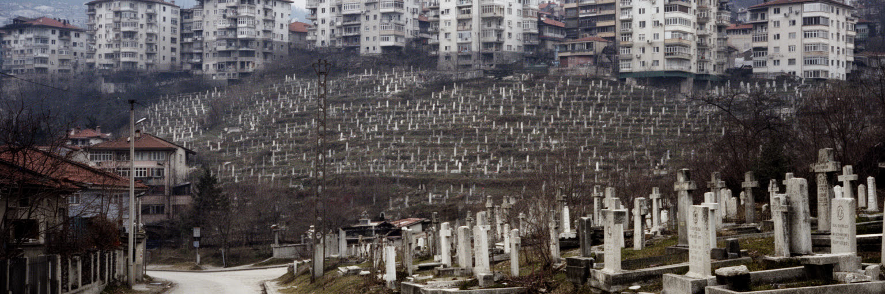
一九九〇年代のサラエボ包囲戦は、都市の読み方を根本から変えました。谷の地形は人々を守る場所ではなく、丘から見下ろされる危険な空間になり、水、食料、電気、暖房、医療、学校へ行くことが命がけの行為になりました。現在の街路には、砲撃跡、墓地、博物館、記念碑、トンネルの記憶が残り、住民の家族史にも深く刻まれています。観光客は包囲戦を学ぶことができますが、悲劇を短い体験として消費しない配慮が必要です。戦争の記憶は、死者の数や破壊された建物だけでなく、日常を続けた人の工夫にあります。地下室で授業を受け、危険な交差点を走り抜け、少ない燃料で暖を取り、隣人と食料を分けた経験が都市の倫理を作りました。戦後復興は建物を直すだけではなく、信頼、雇用、学校、医療、文化活動を取り戻す作業でした。サラエボを見るとき、カフェの明るさや映画祭の賑わいの下に、生活を守ろうとした記憶が重なっていることを忘れられません。追悼の場所は静かな観光地点ではなく、今も家族が名前を確認し、世代が経験を聞き直す場所です。記憶を保存することは対立を固定するためではなく、同じ破壊を繰り返さない公共の約束を作るためにあります。街路の傷は、復興後の都市が何を忘れてはいけないかを示します。記憶の継承は、若い世代が自分の未来を奪われないための教育でもあります。
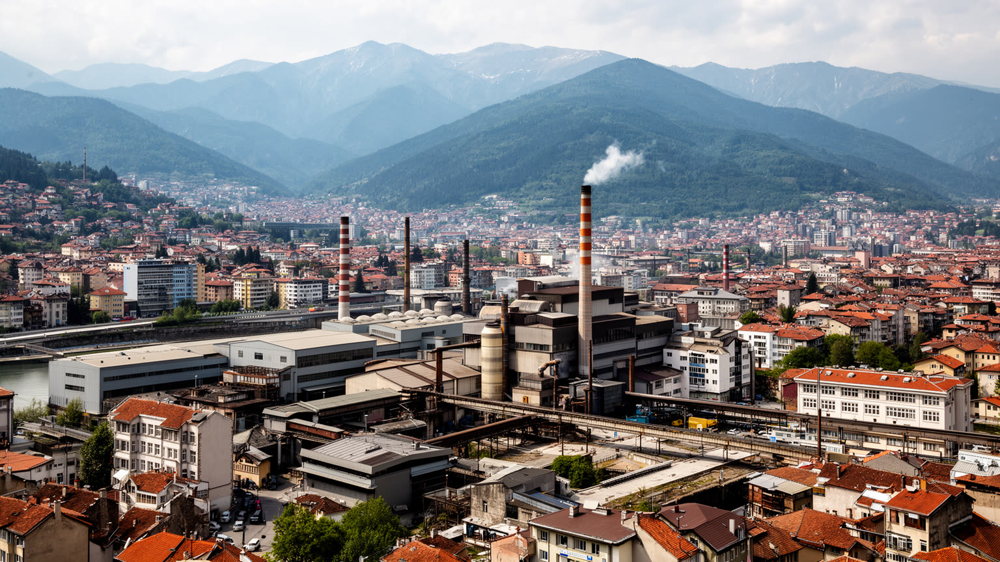
サラエボの経済は、国家とカントンの行政、大学、医療、金融、商業、観光、国際機関、文化イベントに支えられます。重工業の大都市ではなく、首都機能とサービス業が雇用の中心ですが、その安定は誰にでも等しく届くわけではありません。公共部門に近い仕事は比較的安定し、ホテル、飲食、小売、交通、清掃、建設では季節性や低賃金が問題になります。若者にとっては、教育を受けても希望する仕事を得にくいこと、政治的な縁故が機会を左右すること、国外へ移る選択肢が常に近いことが現実です。観光と映画祭は都市のイメージを明るくしますが、短期滞在者の消費だけでは長期の生活基盤は十分に作れません。サラエボの労働を読むには、旧市街の店員、空港やホテルの従業員、大学の研究者、公共交通の運転手、国際機関の職員、建設現場の人を同じ都市経済として見る必要があります。首都の中心性は大きな資産ですが、雇用の質と若者が残れる条件を改善できるかが都市の将来を左右します。国外に住む家族からの送金や帰省時の消費も生活を支え、街の経済は国境を越えた親族関係と結びつきます。働く場所が少ないほど、公共部門への期待は大きくなり、政治への不信も強まります。産業政策は観光宣伝だけでなく、技能、起業、透明な採用、交通改善を含む必要があります。雇用の信頼が増せば、都市に残る選択も現実味を帯びます。

サラエボの文化は、戦争の記憶だけに閉じていません。映画祭は都市を国際的な文化地図へ戻し、バルカン、欧州、中東の作り手と観客をつなぐ舞台になりました。劇場、音楽、文学、写真、デザイン、カフェ文化は、傷を抱えた都市が外へ開き続ける方法でもあります。コーヒーを長く飲む習慣、友人と通りで話す時間、職人の店、大学生の集まる場所は、観光パンフレットよりも深く都市のリズムを伝えます。同時に文化産業には、資金不足、小さな市場、若い作り手の流出、施設の維持という課題があります。国際的な注目は重要ですが、日常的な制作環境が弱ければ文化はイベントだけになってしまいます。サラエボの表現は、包囲戦を記憶する責任と、戦争だけで都市を定義されたくない欲求の間で揺れます。その緊張が映画や音楽に厚みを与えます。文化を読むとは、受賞作や有名イベントだけでなく、小さな上映会、稽古場、書店、夜のカフェで続く会話を見ることです。文化の場は若者に都市へ残る理由を与えますが、家賃や仕事が不安定なら才能は外へ流れます。公共支援、民間の小さな会場、大学、海外との共同制作がつながることで、サラエボの文化は追悼だけでなく未来を語る力を持てます。街の軽やかな会話は、重い歴史への応答でもあります。作品を作る人が生活できることも、文化都市の条件です。
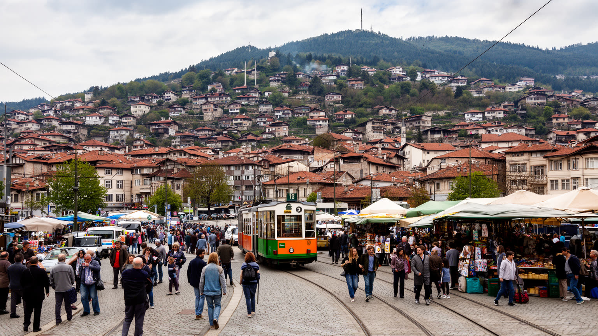
サラエボの日常は、谷底の中心部と丘の住宅地を行き来する生活です。旧市街や中心部には店、学校、病院、行政、カフェが集まり、丘の斜面には戸建て、集合住宅、戦後に直された家、墓地が混じります。冬は暖房費と空気汚染が大きな問題になり、古い住宅の断熱、石炭や薪への依存、自動車の排出が谷に残ります。公共交通はトラム、バス、トロリーバスが生活を支えますが、道路の狭さと渋滞は通勤を重くします。住民にとっての都市の質は、観光名所の美しさだけでなく、暖かい家、安定した仕事、病院への近さ、学校の安全、冬に歩ける道で決まります。戦後の復興で建物は多く直りましたが、心の傷、家族の喪失、国外に住む親族との分断は残ります。若い世代は国際的な文化に開かれながら、賃金、政治不信、将来不安を抱えます。サラエボの暮らしを見るには、朝の市場、通学路、坂道のバス停、冬の煙、夕方のカフェを同じ生活の地図に置く必要があります。都市の温かさは、人の近さと制度の弱さの両方から生まれます。家族や友人の助け合いは強い安全網になりますが、それに頼りすぎると孤立した人や移住者は支えを得にくくなります。行政サービス、住宅改修、医療、心理的支援、公共交通を整えることは、戦後都市の生活を普通に戻すための基礎です。日常の小さな不便は、長く続くと都市への信頼を削ります。
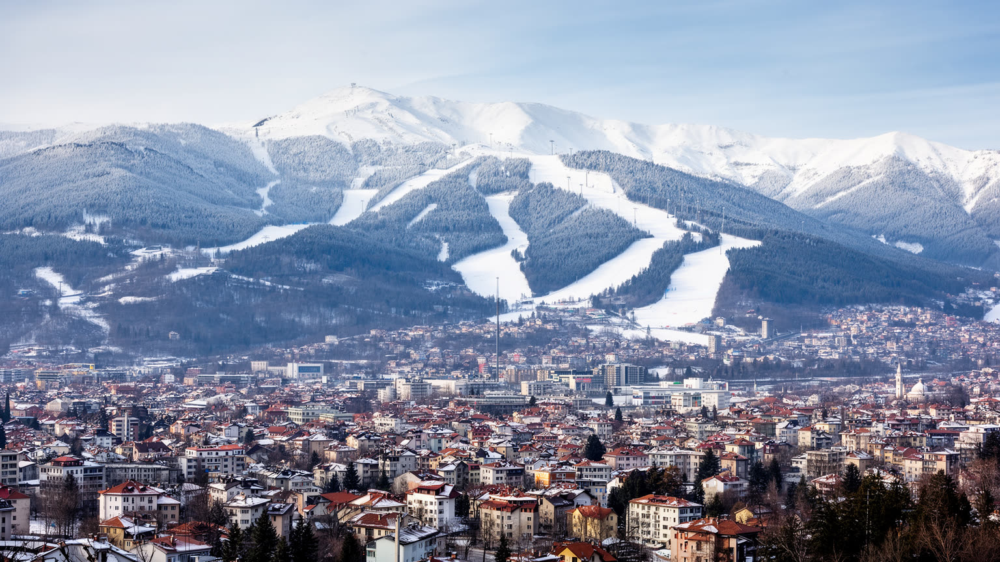
サラエボ周辺の山は、都市の背後にある自然ではなく、歴史と観光の重要な舞台です。一九八四年冬季五輪は、社会主義ユーゴスラビアの国際的な開放性と山岳リゾートの魅力を示しました。イグマン、ビェラシュニツァ、ヤホリナの雪山は、スキー、ハイキング、展望、週末の休息を都市に近い距離で与えます。しかし、同じ山は包囲戦の記憶とも結びつき、競技施設の廃墟や戦争の跡は観光と追悼の間に置かれています。山岳観光はホテル、交通、ガイド、飲食、レンタル業に収入をもたらしますが、雪不足、気候変動、投資不足、無秩序な開発への注意も必要です。サラエボの山を読むには、五輪の華やかな記憶、戦争の暗い記憶、現在の週末レジャーを切り離さずに見ることが大切です。山は都市から逃れる場所であると同時に、都市の歴史を見下ろす場所でもあります。冬の魅力を守るには、自然環境、公共交通、地域住民の利益、記憶の尊重を同時に扱う必要があります。サラエボの観光は旧市街だけで完結せず、谷と山を往復することで立体的になります。空港から近い山岳地は国際観光の強みですが、アクセスが自家用車中心になれば渋滞と排出も増えます。雪の季節以外の登山、教育旅行、追悼のルートを整えることで、観光収入を一年に分散できます。山を使い尽くすのではなく、都市の記憶と自然を守りながら訪れる設計が必要です。
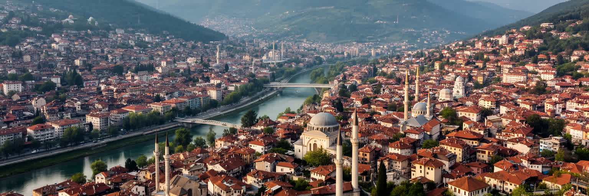
サラエボは、規模だけで測れば巨大都市ではありません。それでも世界都市アトラスに置くべき理由は、谷の中に帝国、宗教、戦争、復興、文化、若者の移動、山岳観光が凝縮しているからです。オスマンの市場からハプスブルクの大通りへ数分で歩ける距離、モスクと教会とシナゴーグの近さ、包囲戦の記憶と映画祭の明るさ、丘の墓地とカフェの賑わいが同じ視界に入ります。この近さは都市の魅力であり、傷の近さでもあります。サラエボを単なる悲劇の街として見ると、住民が続けている日常、冗談、仕事、学び、恋愛、商売、祭りを見落とします。逆に美しい多文化都市としてだけ見ると、分断、貧困、国外流出、空気汚染、政治の停滞を隠してしまいます。読むべきなのは、その両方が同じ街路にあることです。サラエボは、共存が完成した物語ではなく、壊れた関係を抱えたまま生活を続ける都市です。谷の狭さが人を近づけ、歴史の重さが沈黙を作り、文化が外へ開く窓になります。その重なりを歩いて確かめることが、この街を理解する最も誠実な方法です。世界の都市を比べるとき、人口や金融だけでは見えない重要性があります。サラエボは、都市がどれほど傷ついても市場、学校、祈り、映画、山への道を通じて自分を組み直せることを示します。同時に、記憶を尊重しなければ観光も発展も浅くなることを教えます。この小さな首都は、近さをどう扱うかという世界的な問いを投げかけます。